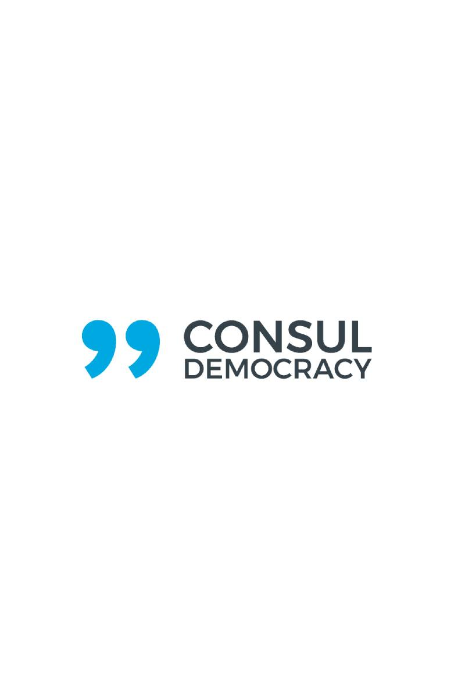
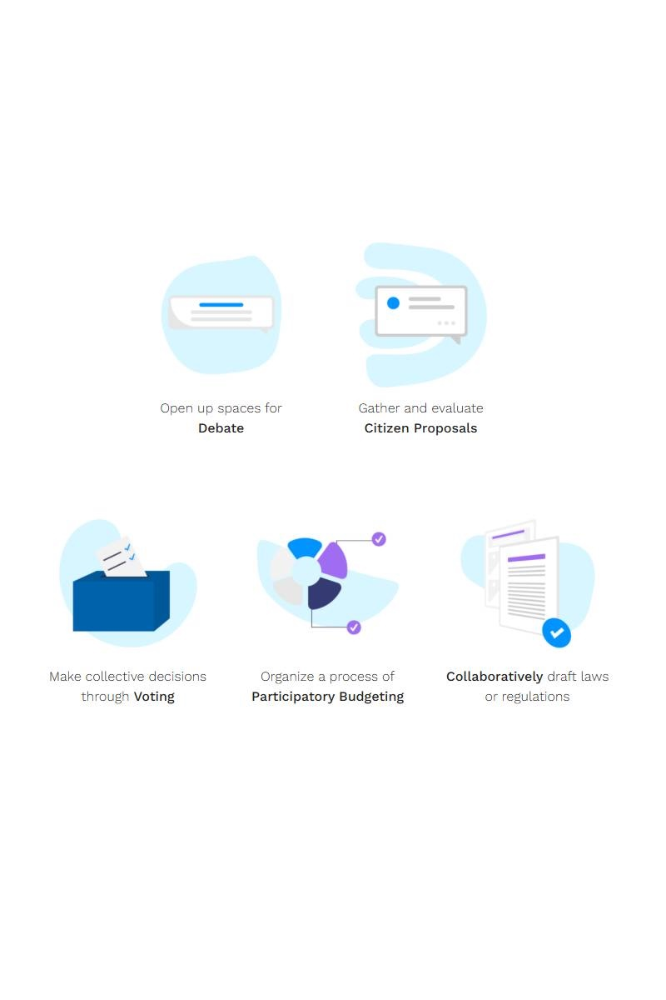

Ayuntamiento de Madrid
Decide Madrid, aplicación web de gobierno abierto y democracia directa orientada a la participación ciudadana, así como su versión base CONSUL Democracy, galardonada en 2018 con el Premio al Servicio Público de la Organización de las Naciones Unidas.


Skills
- User Experience Design
- Service Design
- Diseño centrado en la ciudadanía
- Arquitectura de la información
- Accesibilidad y usabilidad
Responsabilidades
- Diseño de flujos complejos
- Experiencia de usuario en entornos institucionales
- Prototipado y validación
- Traducción de requisitos normativos y políticos a soluciones de diseño
Descripción
Trabajé como Diseñador de Experiencias de Usuario en distintos proyectos digitales del Ayuntamiento de Madrid, centrados en la modernización de los servicios públicos y el impulso del gobierno abierto durante el mandato de Manuela Carmena.
El proyecto más relevante fue Decide Madrid, una plataforma web de participación ciudadana y democracia directa diseñada para facilitar la implicación activa de la ciudadanía en la toma de decisiones públicas. Mi trabajo se enfocó en diseñar flujos claros, accesibles y comprensibles para usuarios muy diversos, reduciendo barreras de entrada y mejorando la experiencia de participación.
Asimismo, participé en la evolución de CONSUL Democracy, la versión base open source del proyecto, adoptada por numerosas ciudades y organizaciones a nivel nacional e internacional. Este trabajo contribuyó a la consolidación de una plataforma reutilizable, escalable y alineada con principios de transparencia, accesibilidad y usabilidad en el ámbito institucional.